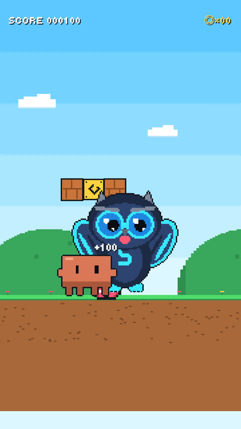

01 · 16 бит
Пиксельный платформер
Игровой уровень: герой бежит, собирает монеты, прыгает по блокам. Подходит для «старта», «победы», игровых тем.
Сцена вертикального ролика (Reels, Shorts, TikTok), кадр 9:16. Мир «Пиксельный платформер».
Стиль: 16-битная пиксельная игра, вид сбоку, чёткие квадратные пиксели без сглаживания, чёрный контур.
Палитра: небо голубое, трава зелёная, земля коричневая, монеты и блоки жёлтые, акцент бирюзовый, контур почти чёрный.
Фон: небо с пиксельными облаками, зелёные холмы, ровная земля с кирпичной кладкой, в воздухе блоки.
Персонажи: два героя (замени на своих): крупная тёмно-синяя сова с огромными глазами в голубом ободке, серыми рожками-ушами и голубой буквой S на груди; рядом маленький терракотовый кубик шире, чем выше, с двумя вертикальными чёрными глазами-палочками и четырьмя короткими ножками. Как они выглядят в этом стиле: герои нарисованы теми же крупными пикселями, что и мир; первый герой крупно, второй рядом.
Свет: плоский дневной, без теней и градиентов.
Детали: сверху счётчик SCORE и монетка, над героями блок с символом </>, вылетающие «+100».
Субтитры: по одному-два слова, в стиле мира: белый пиксельный шрифт на бирюзовой плашке с чёрной рамкой и жёсткой тенью, в нижней трети кадра, но выше интерфейса соцсети.